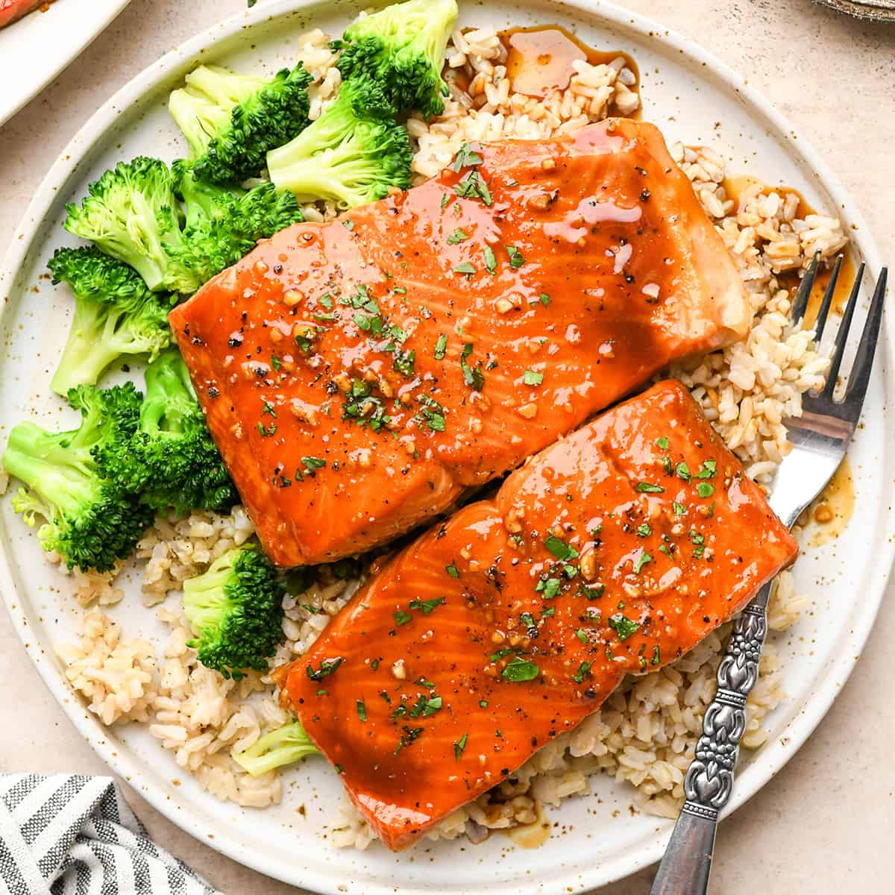

Glazed with the richness of pure maple syrup, this simple Maple Salmon recipe will, for sure, fire up your taste buds! It strikes that perfect balance between a caramelized, sweet exterior and a tender, flaky center. It is so simple to prepare that you won't ever think of ordering it at a restaurant again.
This dish is more than just a meal; it is an invitation. Gather your family, set the table, and enjoy this delectable cuisine that turns a standard weeknight dinner into a gourmet experience.